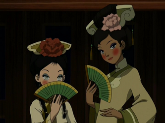
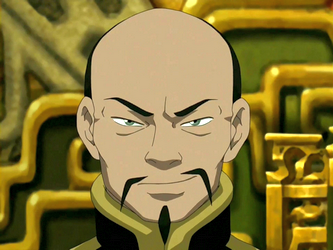
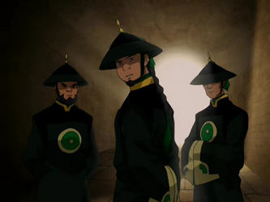
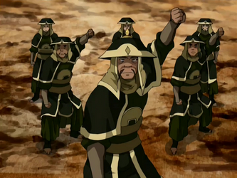

Habitantes y personajes relevantes
La capital del reino tierra, aloja a gran cantidad de refugiados víctimas de la guerra con la nación del fuego. Casi todas ellas, son ciudadanas del mismo reino tierra y por lo tanto pertencen a su etnia. Hay también algunos habitantes de las tribus agua.
A continuación mostraremos algunas personalidades importantes que habitan la ciudad.
Long Feng
Era el gran secretario de la ciudad de Ba Sing Se, a pesar de que su cargo nominalmente solo pretendía conservar la herencia cultural de la ciudad, Long Feng era el verdadero jefe de estado de la ciudad y hasta cierto punto del reino tierra. El ejercía su control sobre la ciudad mediante el uso de la policía cultural de la ciudad mejor conocida como los Dai Li.
Los Dai Li
Formalmente, la policía cultural de la ciudad, que inicialmente pretendía proteger el patrimonio de la ciudad y sus costumbres, son una orden fundada por el avatar Kyoshi. Con el tiempo el dai li fue corrupto y convertido en una policía secreta que estaba al servicio de Long Feng. Uno de los requisitos para permanecer en la ciudad como refugiado consistía en negar la existencia de una guerra fuera de los muros, cuando las personas no obedecían estas órdenes, el dai li los llevaba al lago Laogai, donde mantenían prisioneros políticos, secretos que escandalizarían a la población y un lugar donde se realizaban lavados de cerebro con la palabra clave "El rey de la tierra te invita al lago Laogai" donde las víctimas procedían a realizar acciones involuntarias.
Rey del reino Tierra
El rey del reino tierra actual es Kuei, aunque oficialmente es el jefe de estado del reino, durante mucho tiempo fue manipulado por Long Feng y los Dai Li a tal punto que ignoraba la existencia de una guerra con la nación del fuego. Long Feng era quien realmente ejercía el poder en la ciudad.

Joo Dee
Joo Dee era una guía que se le asignaba a los recién llegados a la ciudad, ella era sometida a los Dai Li y adoctrinaba a los visitantes a que dejaran de mencionar la guerra dentro de los muros. Después se descubre que Joo Dee es solo un personaje y que muchas mujeres son entrenadas con este nombre y misión.

Guardias de la muralla
Los guardias de la muralla son soldados del reino tierra que se encargan de proteger las murallas de la ciudad.
